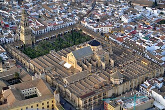

แนะนำ
La mosquée-cathédrale de Cordoue, également connue sous son ancien nom de « mosquée de Cordoue » et sous son nom canonique et officiel de cathédrale Notre-Dame-de-l'Assomption, est un ancien temple romain qui devint basilique chrétienne, du IVe au VIIIe siècle, du temps de la monarchie wisigothique, puis une mosquée, du VIIIe siècle jusqu'au 29 juin 1236, date à laquelle elle a été consacrée comme cathédrale, dans laquelle fut érigée plus tard, au début du XVIe siècle, une chapelle dite majeure pour la distinguer des nombreuses autres chapelles plus anciennes, situées le long des quatre murs intérieurs de l'édifice, à l'exception de la Capilla Real, de la Capilla de San Pablo et de la Capilla de Villaviciosa, lesquelles ne s'adossent pas au quadrilatère formé par les murs nord, ouest, sud et est.
كاتدرائية قرطبة وجامعها والمعروفة رسمياً باسمها الكنسي كاتدرائيَّة سيدة الانتقال ، هي كاتدرائية رومانية كاثوليكية وهي مقر مطران أبرشية قرطبة، مكرسة لذكرى انتقال العذراء بحسب المعتقدات المسيحية وتقع في إقليم أندلسية. نظراً لوضعها كمكان عبادة إسلامي سابق، يٌعرف المبنى أيضًا باسم المسجد الكبير في قرطبة أو مـِسكيتا من قبل السكان المحليين وكلمة مـِسكيتا تعني مسجد باللغة الإسبانية. يعتبر الهيكل من أكثر المعالم الأثرية للعمارة الإسلامية، وهي مدرجة في قائمة مواقع التراث العالمي، كما تصدر سنة 2007 قائمة كنوز إسبانيا الإثنى عشر.
The Mosque–Cathedral of Córdoba is the cathedral of the Roman Catholic Diocese of Córdoba in the Spanish region of Andalusia. Officially called the Cathedral of Our Lady of the Assumption, it is dedicated to the Assumption of Mary. Due to its status as a former mosque, it is also known as the Mezquita and, in a historical sense, as the Great Mosque of Córdoba.
Kurtuba Camii-Katedrali, resmî adıyla Göğe Alınan Meryem Ana Katedrali, İspanya'nın Córdoba kentinde yer alan yapı. Geçmişte bir dönem cami olarak kullanıldığı için İspanyolcada Arapça mescit (مسجد) kelimesinden türemiş Mezquita adıyla da bilinir. 600'lerde kilise olarak inşa edilen yapı 786-1146 yılları arasında çeşitli eklemeler yapılarak cami olarak kullanılmış, sonrasında tekrar kilise olarak kullanılmaya devam edilmiştir.
Gereja Katedral Kordoba, dikenal secara resmi dengan nama gerejawinya, Katedral Bunda Maria Diangkat ke Surga, adalah katedral dari Keuskupan Katolik Roma Córdoba yang didedikasi untuk Maria Diangkat ke Surga dan terletak di Kordoba, Andalusia, Spanyol. Karena statusnya sebagai bekas masjid agama Islam, bangunan ini juga dikenal sebagai Mezquita dan sebagai Masjid Raya Kordoba.
جامع مسجد قرطبہ یا قرطبہ کی جامع مسجد ہسپانوی: Mezquita de Córdoba جسے ایک کلیسا میں تبدیل کر دیا گیا اور اب اسے قرطبہ کی مسجد-کیتھیڈرل بھی کہا جاتا ہے۔ اندلس میں مسلمانوں کے فن تعمیر کا عرصہ تقریباً سات سو برس پر محیط ہے۔ جو آٹھویں صدی عیسوی میں جامع قرطبہ کی تعمیر شروع کیے جانے سے لے کر پندرھویں صدی عیسوی میں غرناطہ کے قصر الحمراء کے مکمل ہونے کے زمانہ پر پھیلا ہوا ہے۔ اس دوران میں سیکڑوں عمارات مثلاً حمام، محلات، مساجد، مقابر، درس گاہیں اور پل وغیرہ تعمیر ہوئے جن کی اگر تفصیل لکھی جائے تو ایک ضخیم کتاب بن جائے۔ اندلس میں مسلمانوں کے فن تعمیر کا مطالعہ کرتے ہوئے یہ بات ذہن نشین رہنی چاہیے کہ یہاں کے مسلمان حکمران اور عوام کی اکثریت پرانی ثقافت کی کورانہ تقلید کے قائل نہیں تھی۔ بلکہ یہاں ایک نئی تہذیب نے جنم لیا تھا اور اس کے نتیجہ میں ایک نیا معاشرہ وجود میں آیا تھا۔ اس نئی تہذیب کے آثار ان کی تعمیر ات کے ہر انداز سے جھلکتے نظر آتے ہیں۔ عرب فاتحین کا یہ قاعدہ رہا تھا کہ وہ جہاں کہیں ف
Die Mezquita-Catedral de Córdoba, oft einfach Moschee von Córdoba (Mezquita de Córdoba) genannt, deutsch auch Kathedralmoschee von Córdoba, ist seit der Reconquista die römisch-katholische Kathedrale in Córdoba. Mezquita ist das spanische Wort für Moschee, aus arabisch مسجد Masdschid, DMG Masǧid [masdʒid]. Als Bischofskirche des Bistums Córdoba heißt sie Catedral de Nuestra Señora de la Asunción.
La mezquita-catedral de Córdoba, conocida eclesiásticamente como catedral de Nuestra Señora de la Asunción y de forma popular como la Mezquita, es la catedral de la diócesis de Córdoba ubicada en la ciudad española de Córdoba, Andalucía.
La Grande moschea di Cordova, oggi Cattedrale di Nostra Signora dell'Assunzione, e popolarmente conosciuta anche come la Mezquita, è una delle principali espressioni dell'arte moresco-islamica e dell'architettura gotica e rinascimentale dell'Andalusia. È con l'Alhambra di Granada, l'Alcázar di Siviglia, la Aljafería di Saragozza e la Giralda di Siviglia la più prestigiosa testimonianza della presenza islamica in Spagna dall'VIII secolo al XIII secolo, dichiarata nel 1984 Patrimonio dell'Umanità dell'UNESCO e, integrata all'interno del centro storico della città, dal 1994 inserita dal pubblico tra i 12 Tesori di Spagna. Premiata anche come il sesto miglior sito di interesse turistico al mondo in un concorso di TripAdvisor. È una delle più grandi chiese del mondo e la cattedrale più grande per superficie interna.
A Mesquita-Catedral de Córdova oficialmente conhecida pelo seu nome eclesiástico, a Catedral de Nossa Senhora da Assunção é a catedral da Diocese Católica Romana de Córdoba dedicada à Assunção de Maria e localizado na região espanhola da Andaluzia. Devido ao seu status como uma antiga mesquita islâmica, também é conhecida como Mesquita e como a Grande Mesquita de Córdova.
De Mezquita is de kathedraal van Córdoba in het zuiden van Spanje. Het historische centrum van de stad met de kathedraal staat op de Werelderfgoedlijst van de UNESCO. Mezquita is Spaans voor moskee. Hiermee wordt verwezen naar de functie van het gebouw voor de Reconquista, voordat het een kathedraal werd.
科尔多瓦圣母升天主教座堂，又名科尔多瓦主教座堂 、哥多華大教堂或科尔多瓦清真寺。该建筑为世界遗产科尔多瓦历史中心的一部分，最早建于786年，名为圣文生圣殿。1238年，收复失地运动后，将清真寺改为罗马天主教的主教座堂。1523年，在穆斯林建筑的中心，开始修建文艺复兴风格的圣殿。科尔多瓦大清真寺是摩尔人建筑中完成度最高、最杰出的作品之一。今天它是科尔多瓦最重要的地标，与格拉纳达的阿尔罕布拉宫同为安达卢西亚建筑的代表。
メスキータ（mezquita）は、スペイン語でモスクを意味し、アラビア語 مسجد（"Masjid"）に由来する。しかし、一般的には固有名詞としてスペイン・アンダルシア州コルドバにあるカトリック教会の司教座聖堂「コルドバの聖マリア大聖堂 」を指す場合が多い。本項は、この聖マリア大聖堂について解説する。
메스키타(스페인어: Mezquita)는 스페인어로 "모스크"라는 뜻으로, 아랍어 "마스지드"(مسجد)에서 유래한다. 그러나 일반적으로 고유명사로서, 스페인 안달루시아 지방 코르도바에 있는 가톨릭 교회의 주교좌 성당 "코르도바 산타마리아 성당"(Catedral de Santa María de Córdoba)을 가리키는 경우가 많다. 이 메스키타는 스페인에 현존하는 유일한 큰 모스크이며, 코르도바 대모스크라고도 한다.
कोरदोबा की गिरजा-मस्जिद, ਜਾਂ कोरदोबा की मस्जिद, वर्जन मेरी को समर्पित एक गिरजा है जो आंदालूसिया, स्पेन में सथित है। यह विसिगोथ मूल के लोगों द्वारा एक गिरजा के रूप में बनाई गई थी पर बाद में मध काल के दौरान इसको इस्लामी मस्जिद में तब्दील कर दिया गया था। स्पेन पर दुबारा अधिकार के बाद इसको फिर से एक गिरजा में तब्दील किया गया। इस गिरजा को मूरी निर्माण कला की सब से महान इमारतों में से एक माना जाता है। 2000 के बाद से स्पेनी मुसलमान रोमन कैथोलिक चर्च से इस स्थान में प्रार्थना करने की इजाजत की मांग कर रहे हैं। मुसलमानों के इस माँग को स्पेनी गिरजा अधिकारियों और रोमन गिरजा अधिकारीयों ने कई बार ठुकरा दिया है।
Мески́та , или Ко́рдовская соборная мечеть — римско-католический собор, расположенный в андалусском городе Кордова. В Средневековье была второй по величине мечетью в мире. Является, возможно, самым замечательным памятником династии Омейядов. После испанской Реконкисты была преобразована в церковь, а некоторые детали интерьера, вроде колонн и арок, были стилистически заменены на византийский лад.
อาสนวิหาร และอดีต มัสยิดใหญ่แห่งกอร์โดบา มีชื่อเรียกในศาสนาคริสต์ว่า อาสนวิหารแม่พระรับเกียรติยกขึ้นสวรรค์ และเป็นที่รู้จักในท้องถิ่นว่า มัสยิด-อาสนวิหารกอร์โดบา ปัจจุบันเป็นแหล่งมรดกโลกร่วมกับพื้นที่ส่วนประวัติศาสตร์ ตั้งอยู่ในเมืองกอร์โดบา ในแคว้นอันดาลูซิอา ทางตอนใต้ของประเทศสเปน
Moskén-katedralen i Córdoba är en katedral och före detta moské i Córdoba med en komplicerad historia. Som moské färdigställdes den på 900-talet, men byggdes i början av 1200-talet om till en katedral av Romersk-katolska kyrkan.
Moscheea-Catedrală din Córdoba, cunoscută oficial drept Catedrala Adormirii Doamnei Noastre, este o catedrală romano-catolică din orașul Córdoba, Spania. La origine, aceasta era o mare moschee din secolul VIII, transformată în catedrală în timpul Recuceririi spaniole. Din acest motiv mai este cunoscută ca Moscheea din Córdoba sau La Mezquita (Moscheea). În prezent, este sediul Diecezei Romano-Catolice de Córdoba și cel mai reprezentativ monument al orașului.
เรื่องเล่าและเรื่องราว
ประเพณีเล่าสืบกันมาโบสถ์ที่ถูกแบ่งใช้ แล้วถูกซื้อ
ตามเรื่องเล่าดั้งเดิม ณ ที่แห่งนี้เคยมีโบสถ์ของชาววิซิกอธที่อุทิศแด่นักบุญวินเซนต์ หลังการพิชิตของมุสลิม กล่าวกันว่าโบสถ์ถูกแบ่งเป็นสองส่วน ครึ่งหนึ่งสำหรับชาวคริสต์ อีกครึ่งหนึ่งสำหรับการละหมาดของมุสลิม ในปี 785 เอมีร์อับดุรเราะห์มานที่ 1 เจ้าชายแห่งราชวงศ์อุมัยยะฮ์ผู้รอดชีวิตจากดามัสกัส กล่าวกันว่าได้ซื้อส่วนของชาวคริสต์ในราคาหนึ่งแสนดีนาร์ แล้วสร้างมัสยิดใหญ่ขึ้น นักโบราณคดียังคงถกเถียงกันถึงการมีอยู่และขนาดที่แท้จริงของโบสถ์นี้
แหล่งที่มา: Wikipedia : Mosque–Cathedral of Córdoba · UNESCO : Historic Centre of Cordoba
ประเพณีเล่าสืบกันมามิห์รอบทองกับช่างโมเสกจากไบแซนไทน์
เคาะลีฟะฮ์อัลหะกัมที่ 2 ผู้รักหนังสือยิ่ง ได้ขยายมัสยิดและสร้างมิห์รอบใหม่ให้ ซึ่งแล้วเสร็จในปี 971 ปกคลุมด้วยโมเสกทอง ตามนักประวัติศาสตร์อิบนุ อิซารี เขาเขียนจดหมายถึงจักรพรรดิไบแซนไทน์เพื่อขอช่างโมเสกฝีมือเอก จักรพรรดิส่งช่างฝีมือมาหนึ่งคนพร้อมชิ้นโมเสกเล็ก ๆ ประมาณ 1,600 กิโลกรัมเป็นของขวัญ ช่างผู้นั้นได้ฝึกช่างฝีมือแห่งกอร์โดบา ซึ่งทำงานจนเสร็จด้วยตนเอง ปัจจุบันมิห์รอบนี้เป็นหนึ่งในผลงานชิ้นเอกของศิลปะอิสลาม
แหล่งที่มา: Wikipedia : Mosque–Cathedral of Córdoba
ประเพณีเล่าสืบกันมาระฆังแห่งซานเตียโก
ในปี 997 แม่ทัพอัลมันศูร (อัลมันโซร์) โจมตีซานเตียโกเดกอมโปสเตลาและนำระฆังของมหาวิหารกลับมายังกอร์โดบา ตามพงศาวดาร ระฆังเหล่านั้นถูกหลอมและทำเป็นตะเกียงสำหรับมัสยิด ในปี 1236 เมื่อกษัตริย์แฟร์นันโดที่ 3 แห่งกัสติยายึดกอร์โดบาได้ กล่าวกันว่าพระองค์ให้นำระฆังเหล่านั้นกลับไปยังซานเตียโก ตามบันทึกของนักพงศาวดารฆิเมเนซ เด ราดา ไม่มีตะเกียงเหล่านี้หลงเหลืออยู่เลย เรื่องนี้เป็นที่รู้จักจากตัวบท ไม่ใช่จากวัตถุ
แหล่งที่มา: Wikipedia : Mosque–Cathedral of Córdoba
ประเพณีเล่าสืบกันมามหาวิหารกลางป่าเสา
ในปี 1236 มัสยิดกลายเป็นมหาวิหาร แต่อาคารยังคงแทบไม่ถูกแตะต้องเป็นเวลาสามศตวรรษ ในปี 1523 บิชอปได้ให้สร้างโถงกลางขนาดใหญ่ของมหาวิหารขึ้นกลางหมู่เสา แม้สภาเมืองจะคัดค้าน โดยได้รับความเห็นชอบจากจักรพรรดิชาลส์ที่ 5 เล่ากันว่าเมื่อจักรพรรดิเห็นผลงาน พระองค์เสียดายการตัดสินใจนี้ว่า “พวกท่านได้สร้างสิ่งที่จะสร้างที่ไหนก็ได้ และทำลายสิ่งที่มีเพียงหนึ่งเดียวในโลก” ประโยคนี้ถูกยกให้เป็นของพระองค์ตามประเพณี โดยไม่มีความแน่นอน
แหล่งที่มา: Wikipedia : Mosque–Cathedral of Córdoba
บนแผนที่
เอกสารและลิงก์
- Wikipédia — Français
- Wikipédia — العربية
- Wikipédia — English
- Wikipédia — Türkçe
- Wikipédia — Bahasa Indonesia
- Wikipédia — اردو
- Wikipédia — Deutsch
- Wikipédia — Español
- Wikipédia — Italiano
- Wikipédia — Português
- Wikipédia — Nederlands
- Wikipédia — 中文
- Wikipédia — 日本語
- Wikipédia — 한국어
- Wikipédia — हिन्दी
- Wikipédia — Русский
- Wikipédia — ไทย
- Wikipédia — Svenska
- Wikipédia — Română
- Wikidata — Q33200
ข้อมูล: วิกิสนเทศ (CC0) ปรับปรุงทุก 3 เดือน ปีที่แสดงคือปีที่สร้างอาคารเก่าที่สุดที่ทราบ: สำหรับอาคารที่กลายเป็นมัสยิดภายหลัง (เช่น ฮาเจียโซเฟีย) จะเป็นปีของอาคารเดิม ภาพถ่าย: วิกิมีเดียคอมมอนส์ ผู้ถ่ายและสัญญาอนุญาตอยู่ในหน้าของแต่ละภาพ